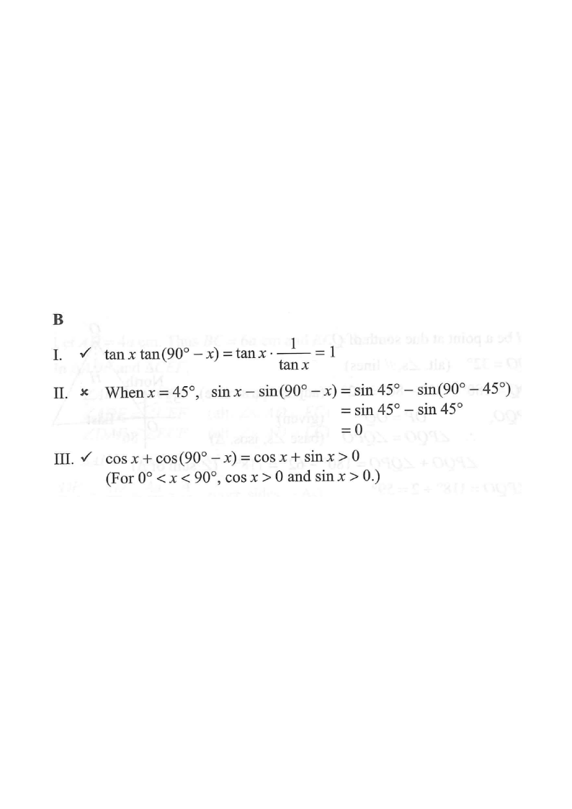

Right triangle (x, 90°−x)Opposite / Adjacent sidesAngle x & 90°−xComplementary pairsin x − sin(90°−x)
Question & Solution
[2013 MC #23]
If $0^\circ < x < 90^\circ$, which of the following must be true?
I. $\quad \tan x \tan(90^\circ - x) = 1$
II. $\quad \sin x - \sin(90^\circ - x) < 0$
III. $\quad \cos x + \cos(90^\circ - x) > 0$
A. I and II only
B. I and III only
C. II and III only
D. I, II and III

Figure (original exam diagram)
STEP 1 · KEY IDENTITY
For a right-angled triangle with an acute angle $x$, the other acute angle is $90^\circ - x$.
The two acute angles are complementary, giving the co-function identities:
$$\sin(90^\circ-x)=\cos x,\qquad \cos(90^\circ-x)=\sin x,\qquad \tan(90^\circ-x)=\frac{1}{\tan x}.$$
Complementary Angle Identity\(\sin(90^\circ-\theta)=\cos\theta,\qquad \cos(90^\circ-\theta)=\sin\theta\)The two acute angles of a right-angled triangle add to \\(90^\circ\\), so \\(x\\) and \\(90^\circ-x\\) swap sine and cosine.
STEP 2 · CHECK STATEMENT I
$$\tan x \cdot \tan(90^\circ - x)=\tan x \cdot \frac{1}{\tan x}=1.$$
This holds for every $0^\circ < x < 90^\circ$. ✔ Statement I is TRUE.
Tangent of Complementary Angles\(\tan(90^\circ-\theta)=\dfrac{1}{\tan\theta}\)Statement I pairs \\(\tan x\\) with \\(\tan(90^\circ-x)\\), so the two factors cancel to give \\(1\\).
STEP 3 · CHECK STATEMENT II
Using $\sin(90^\circ-x)=\cos x$:
$$\sin x - \sin(90^\circ - x)=\sin x - \cos x.$$
This is not always negative. For example, take $x=60^\circ$:
$$\sin 60^\circ - \cos 60^\circ \approx 0.866 - 0.5 = 0.366 > 0.$$
So II fails. ✘ Statement II is NOT always true.
STEP 4 · CHECK STATEMENT III
Using $\cos(90^\circ-x)=\sin x$:
$$\cos x + \cos(90^\circ - x)=\cos x + \sin x.$$
For $0^\circ0$ and $\cos x>0$, so their sum is strictly positive. ✔
Statement III is TRUE.
Signs of Trigonometric Ratios for Acute Angles\(0^\circ<\theta<90^\circ\ \Longrightarrow\ \sin\theta>0\ \text{and}\ \cos\theta>0\)For the acute angle \\(x\\) both \\(\sin x\\) and \\(\cos x\\) are positive, so \\(\cos x+\sin x\\) cannot be negative.
STEP 5 · CONCLUSION
Only I and III must be true (II can be positive when $x>45^\circ$).
Hence the answer is B.
Answer: B (I and III only)
PRACTICESimilar question — try it yourself
Question. For \\(0^\circ0\\) \quad III. \\(\sin x+\sin(90^\circ-x)>0\\)
Show the worked solution
Step 1. By the complementary angle identities, \\(\sin(90^\circ-x)=\cos x\\) and \\(\cos(90^\circ-x)=\sin x\\).
Step 2. I: \\(\sin(90^\circ-x)-\cos x=\cos x-\cos x=0\\), so I is true for every such \\(x\\).
Step 3. II: take \\(x=30^\circ\\); then \\(\tan 30^\circ\approx0.577\\) and \\(\tan 60^\circ\approx1.732\\), so the difference is negative. II is false.
Step 4. III: \\(\sin x+\sin(90^\circ-x)=\sin x+\cos x\\), and both terms are positive for an acute angle, so III is true.
Step 5. Only statements I and III must be true (II fails once \\(x>45^\circ\\)).
Answer: I and III only
💡 Tip: When $x > 45^\circ$ the sine is larger than the cosine, so $\sin x - \cos x > 0$ — a useful test value to disprove a "must be true" claim.